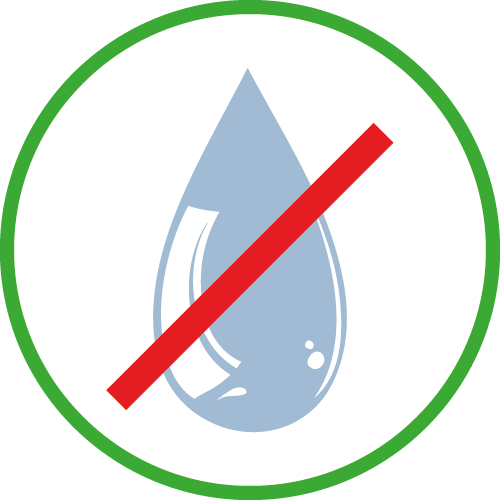

I denne del af vejledningen handler det om hvad du må og hvad du ikke må, når du betjener gryden.
Her er også en lille illustration, som viser hvordan man slukker og tænder for kipgryden.
God fornøjelse!
Salt har korrosiv indvirkning på det rustfrie stål.

I tilfælde af brand, sluk ALDRIG med vand.
1. Trykknappanel
Startknap. Starter gryden. Der skal komme hvidt lys i startknappen når gyden er
tændt.
Stopknap. Slukker for alt i gryden.
Slowmixknap. (Ekstraudstyr) Omrøreren kører så længe, der holdes på knappen.
Buzzer / lydgiver. Giver lyd i forbindelse med
tidsfunktioner og programmer.
2. Forsyningsspændingen
Tænd for forsyningsspændingen på forsyningsadskilleren. Se til højre.
Drej håndtaget så det står lodret. Altså Den hvide pil opad, for at tænde.